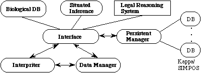

(11) Knowledge Representation Language: QUIXOTE
Machine: Multi-PSI
Environment: PIMOS
Language: ESP, KL1
Source Code: 3 MB
Documents: Manual (Japanese)
Overview
Language System providing fundamental facilities for knowledge
information processing, such as knowledge representation and
inferences
System Configuration

Features
QUIXOTE provides several facilities for developing wide range
of experimental systems for knowledge information processing, such as
databases, natural language processing, and legal reasoning.
QUIXOTE is a language for deductive object-oriented databases,
and can be seen as an extended logic-based language having
object-orientation features, subsumption constraints, and hierarchical
modules.
- Object identity defined over extended terms (object terms)
- Constraints over subsumption relation among object terms
- Property inheritance defined in terms of subsumption constraints
- Modularized and hierarchical knowledge bases defined by modules
and inter-module relations
- Queries having addtional assertions to a knowledge base, and
answers with assumed constraints
FTP
- Knowledge Representation Language: QUIXOTE [1,447K]

www-admin@icot.or.jp